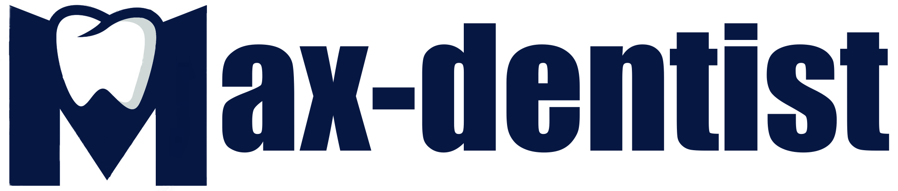
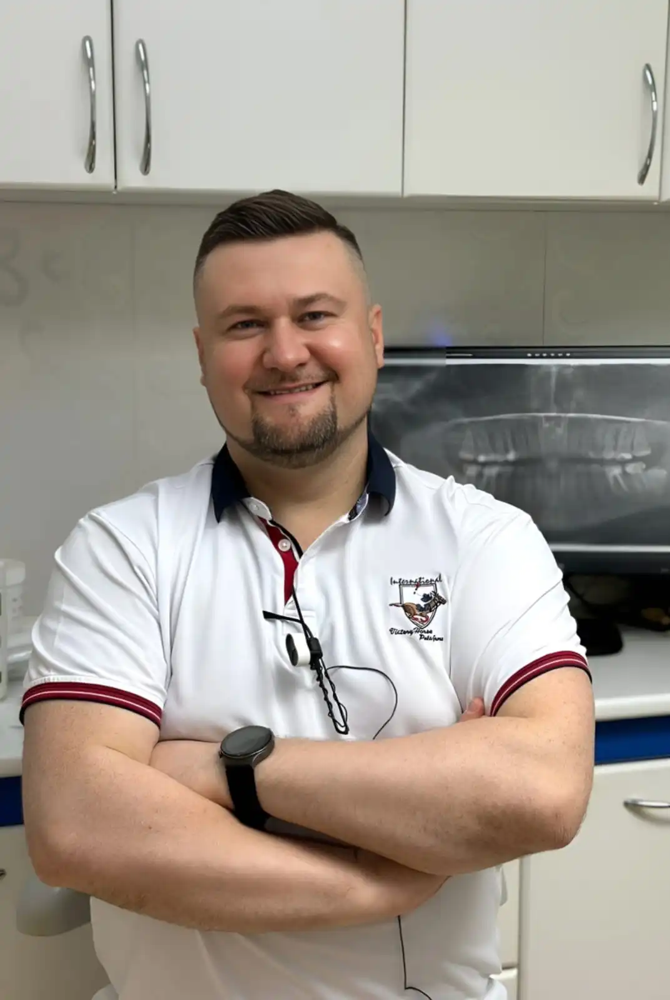
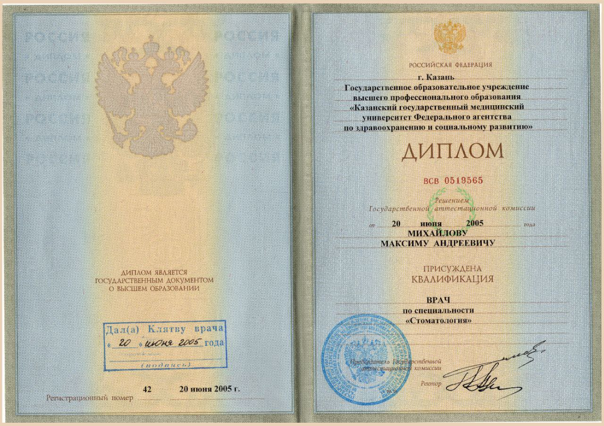
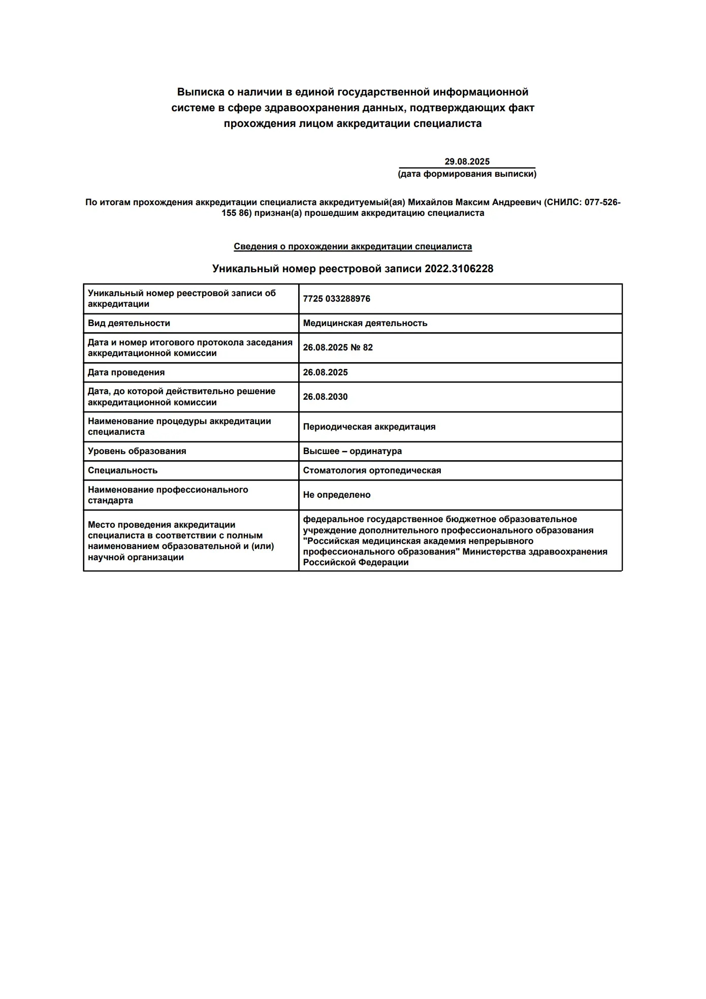
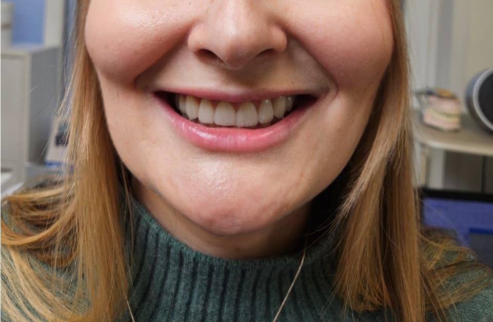
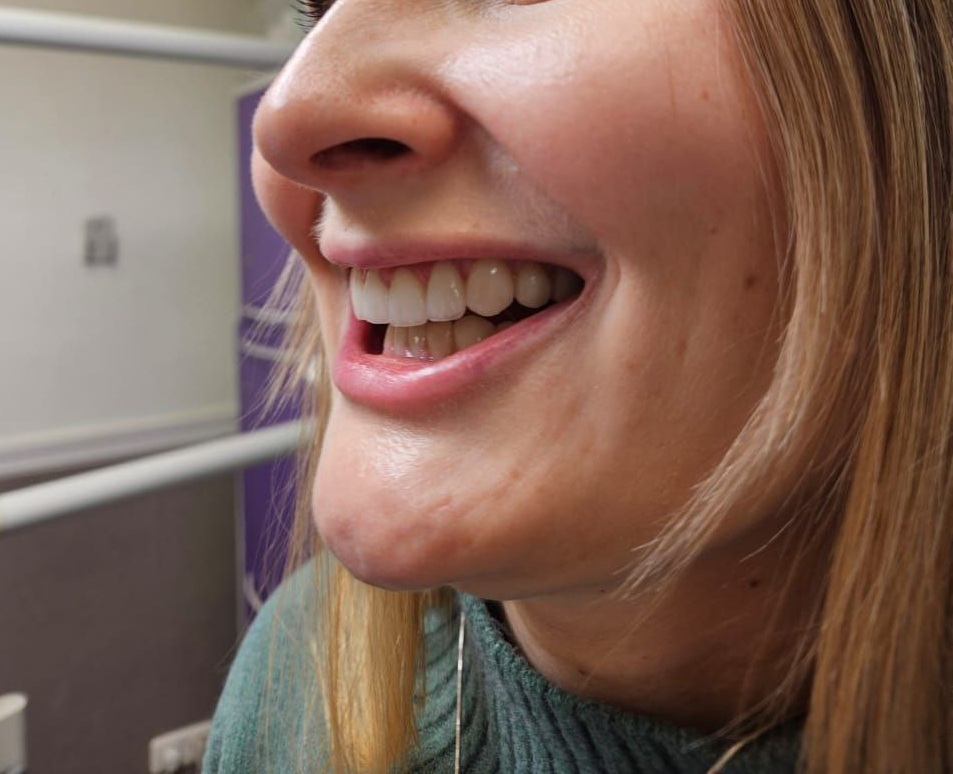
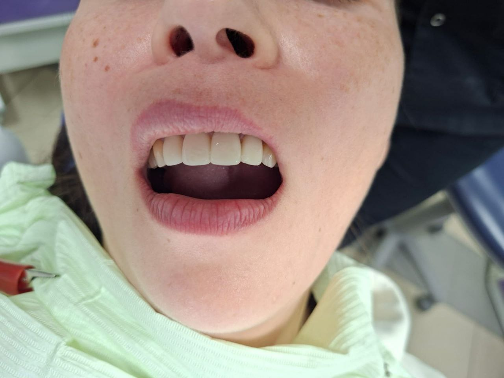
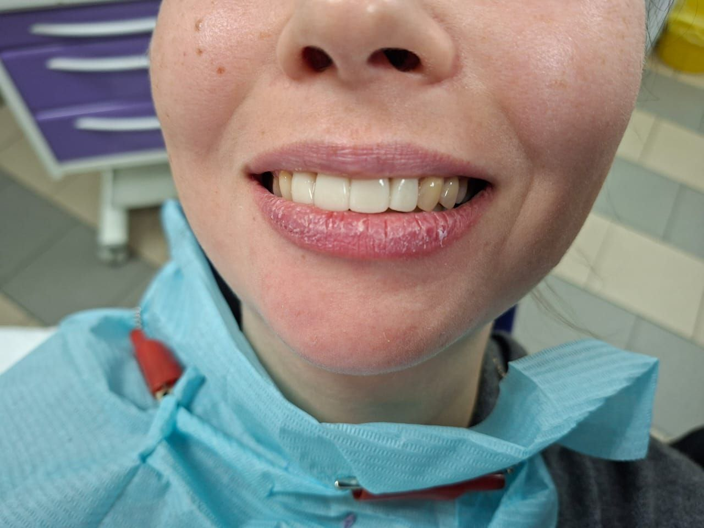

Виниры E-max
Тонкие (0.3 мм) и прочные накладки для идеальной улыбки
СтоимостьСтоматолог-ортопед

Персональный подход в современном кабинете рядом с метро Полежаевская
Записаться на консультацию
Я, Михайлов Максим Андреевич, врач стоматолог-ортопед с 20-летним стажем, специализируюсь на эстетической и функциональной реабилитации зубов.
2005
Стоматология
Базовое образование

2011
Стоматология терапевтическая
Циклы переподготовки
2012
Стоматология ортопедическая
Циклы переподготовки

Используем те же материалы и технологии, что и в премиальных клиниках центра, но без переплаты за "имя"
Оптимизировали логистику и аренду, чтобы предложить вам лучшую стоимость в Москве
Современный кабинет в тихом районе с парковкой - без пробок и очередей центра
Только до 30 сентября 2025 года при записи на консультацию
До конца акции осталось:
Реальные примеры восстановленных улыбок
.webp)
.webp)
Пациентка В. Обратилась с жалобами на эстетику передних зубов. После консультации было решено сделать виниры на верхней и нижней челюсти.
Результат: Безупречная улыбка с естественной прозрачностью
Материал: Керамика E-max высшего качества
Сроки: 2 недели от первого визита до финального результата
.webp)
Пациент Н. Обратилась с жалобой на неудовлетворительные реставрации пломбировочными материалами. Главным желанием было достижение естественного цвета и формы.
Решение: Керамические коронки с индивидуальным подбором оттенка
Особенность: Полное соответствие натуральным зубам пациента
Результат: Естественная улыбка без "эффекта искусственных зубов"
.webp)
.webp)
Пациентка А. Обратилась с жалобами на визуальные различия между коронками и неудовлетворительную форму зубов.
Технология: Циркониевые коронки с анатомической формой
Сроки: Новая улыбка всего за 7 дней
Эффект: Единый цветовой ряд без визуальных различий
.webp)
.webp)
Пациент В. Обратился с проблемой постоянного выпадения пломбы на жевательном зубе.
Решение: Прецизионная керамическая накладка
Преимущество: В 3 раза прочнее композитных материалов
Гарантия: Пожизненная на конструкцию
.webp)
.webp)
Пациентка К. Обратилась с жалобами на эстетическую неудовлетворённость: на верхней челюсти передний зуб накладывался на соседний, а на нижней наблюдались значительные промежутки между зубами.
Особенность случая: Отказ пациента от ортодонтического лечения (брекет-систем)
Решение: Комплексная ортопедическая реставрация с коррекцией формы и положения
Результат: Идеальные контакты между зубами и гармоничная улыбка без ортодонтии
Технология: Керамические виниры и коронки с коррекцией окклюзии


Пациентка. Обратилась с жалобами на эстетическую неудовлетворённость из-за укороченных, сточенных зубов, а также с болью в жевательных мышцах. Целью было создать красивую улыбку и решить функциональные проблемы.
Особенность случая: Сочетанная проблема — патологическая стираемость зубов (верхних и нижних) и дисфункция жевательных мышц.
Решение: Виниры на все зубы с обязательным поднятием высоты прикуса (окклюзионной высоты).
Результат: Полное восстановление эстетики и функции: из маленьких, стёртых зубов созданы красивые зубы правильного размера, устранена мышечная боль.
Технология: Керамические виниры на весь зубной ряд с комплексной коррекцией прикуса.


Пациентка. Обратилась после завершения ортодонтического лечения (брекетов) с запросом на создание идеальной улыбки. Целью было исправить эстетические недостатки: неидеальную форму зубов, сколы и добиться безупречного цвета.
Особенность случая: Запрос на финальную эстетику после успешного ортодонтического лечения для создания идеальной улыбки.
Решение: Установка керамических виниров на четыре передних зуба для коррекции формы, цвета и устранения мелких дефектов.
Результат: Безупречная, гармоничная и естественная улыбка. Цвет зубов (оттенок 3) идеально подобран, верхние и нижние зубы полностью покрыты винирами для создания единого эстетического образа.
Технология: Керамические виниры для завершающей эстетической реставрации.
Прозрачные цены без скрытых платежей
* Точная стоимость определяется после консультации
Пн,ЧТ: 10:00 - 20:00
Позвоните, и мы предоставим вам скидку 20%